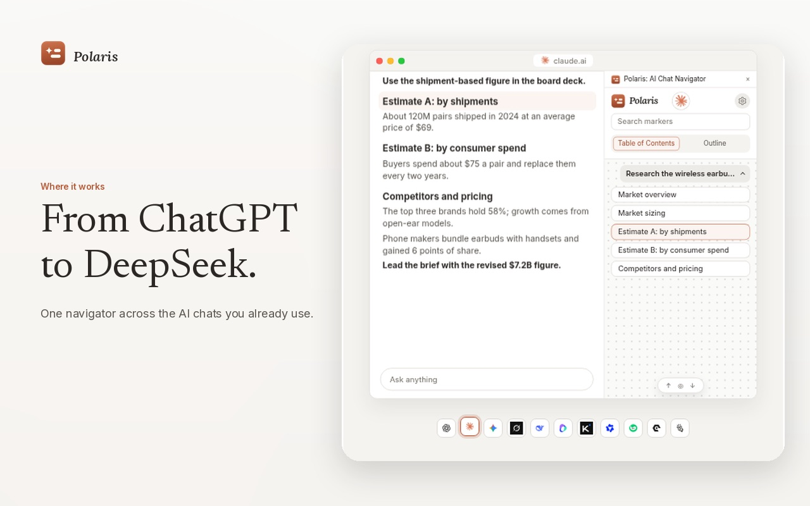
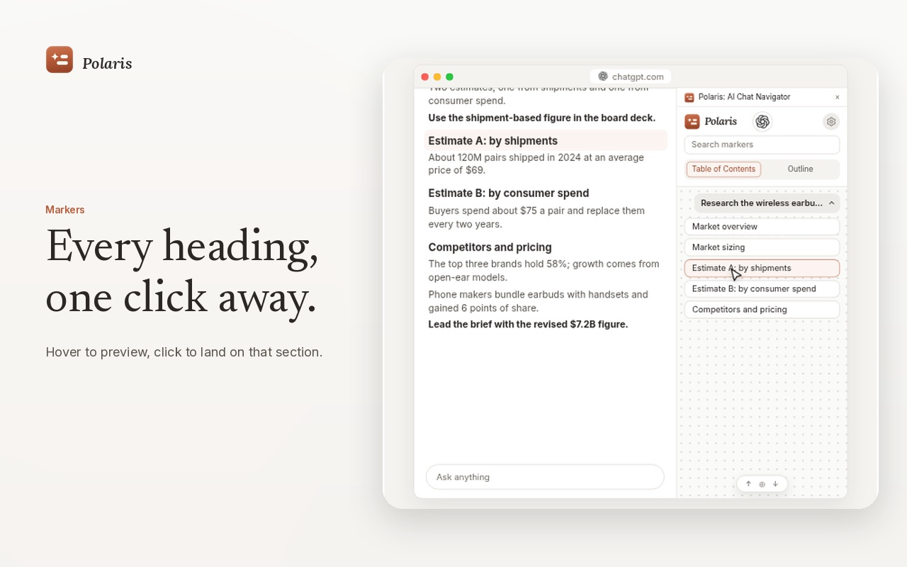

For Claude
Navigate long Claude conversations by heading
Claude’s answers are long and well structured, but claude.ai gives you no way to jump between their sections. Polaris: AI Chat Navigator adds markers on the edge of the page, a Table of Contents and an Outline, so you can reach any part of a long Claude chat in one click. Free to start on Chrome, Edge and Firefox.

When a Claude chat gets long
Drafting a spec, reviewing code or researching a topic with Claude, a single reply can run to many headed sections, and a session can hold dozens of replies. Finding the section you read ten minutes ago means scrolling through all of it. Rereading one part, or handing it to a colleague, means dragging a selection across several screens.
What Polaris adds to claude.ai
- Edge markers. Each heading, list and table in Claude’s answers becomes a small marker on the edge of the page. Hover to preview the section, click to land on it.
- Table of Contents. Every heading, grouped under the prompt that produced it, in a panel beside the chat.
- Outline. Read one long answer section by section, with tables, task lists, code and images kept. Expand only the parts you need.
- Copy and export. Copy one section, or export an answer as Markdown or HTML, to reuse it or hand the context to a new chat.
- Search. Filter headings by a word you remember and jump straight to the match.


Set it up in a minute
- Install Polaris from the Chrome Web Store, Edge Add-ons or Firefox Add-ons.
- Pin Polaris from the puzzle icon in the toolbar.
- Open or refresh a conversation on claude.ai. Markers appear as soon as the first section of an answer is written.
- Open the Polaris panel for the Table of Contents and Outline.
Free and Pro
| Free | Pro | |
|---|---|---|
| Platforms | 2 at a time (Claude can be one) | All 11 supported platforms |
| Table of Contents | Messages already loaded on the page | Also earlier messages kept by Long conversation mode |
| Markers, Outline, search, export | Included | Included |
| Price | $0, no payment details | One-time: $12.90 in the first 7 days of the trial, then $19.99. No subscription. |
Local by design
Polaris builds its navigation in your browser from the page you have open. Your Claude conversations are not sent to the developer or to any third party, and Polaris never asks for your Claude password. Details are in the privacy policy.
Questions
How do I find an earlier section in a long Claude conversation?
With Polaris: AI Chat Navigator installed, every heading, list and table in Claude’s answers on claude.ai gets a marker on the edge of the page, and the Table of Contents lists every heading. Click one to jump to that section.
Is Polaris free on Claude?
Yes. The free version works on two supported platforms at a time, and Claude can be one of them. Pro is a one-time purchase that adds every supported platform and Long conversation mode.
Does Polaris read or upload my Claude chats?
Polaris reads the answer on the page you have open to build its navigation, locally in your browser. Conversation content is not sent to the developer or to third-party servers.
Can I pass part of a Claude answer to another chat?
Yes. Copy a single section from the Outline, or export the answer as Markdown or HTML, and paste it into a new chat to hand the context back.